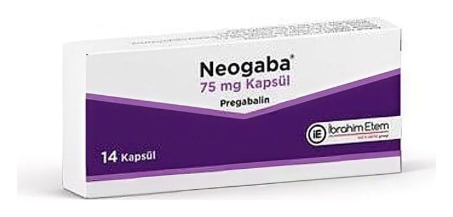

Neogaba 75 mg Kapsül ,56 Kapsül

Ne için kullanılır
KT · Bölüm 1NEOGABA 75 mg kapsül, kırmızı-beyaz, sert jelatin bir kapsüldür. Her kapsül 75 mg pregabalin içerir, 14 ve 56 kapsüllük alüminyum blisterler içeren ambalajlarda sunulmaktadır. NEOGABA, ağızdan alınan ve kısmi sara (epilepsi) nöbetlerinin tedavisinde diğer nöbet ilaçları ile birlikte ek tedavi olarak; merkezden uzak (periferik) sinir hasarına bağlı ağrının (nöropatik ağrı) tedavisinde, yaygın anksiyete (kaygı) bozukluğunun tedavisinde ve fibromiyalji (esas olarak kasları ve kasların kemiğe yapıştığ ı bölgeleri etkileyen ve yaygın ağrıya neden olan bir çeşit yumuşak doku ağrısı) tedavisinde kullanılan bir ilaçtır. NEOGABA, 18 yaş ve üstü olan yetişkinlerde kullanılır, 18 yaşın altındakilerde yeterli güvenlilik ve etkililik bilgisi bulunmadığı için, kullanımı önerilmez. Nöropatik Ağrı NEOGABA yetişkinlerde, merkezden uzak (periferik) sinirlerin hasar görmesinden kaynaklanan uzun süreli ağrılarda kullanılır. Şeker hastalığı ve zona gibi bir çok hastalık sinirlerinize zarar vererek sinir hasarına bağlı ağrıya sebep olabilir. Bu ağrı hissi, sıcaklık, yanma, batma, vurma, zonklama, sızlama, uyuşma, karıncalanma şeklinde ya da elektrik
çarpması, iğne batması gibi, delici, keskin veya kramp tarzında bir ağrı şeklinde tanımlanabilir. Nöropatik ağrı, duygu durumunuzda değişikliklere, uyuma sorunlarına ve yorgunluğa neden olup fiziksel ve sosyal yaşamınızı ve genel yaşam kalitenizi etkileyebilir. Epilepsi NEOGABA yetişkinlerde, sara nöbetlerinin bir çeşidini tedavi etmek için kullanılır (sekonder jeneralize konvülsiyonların eşlik ettiği ya da etmediği parsiyel konvülsiyonlar). Doktorunuz, almakta olduğunuz ilaçlarla durumunuzu kontrol altında tutamadığı zaman, NEOGABA’yı tedavinize ekleyebilir. NEOGABA sara nöbetlerinin tedavisinde tek başına kullanım için değildir ve her zaman sara nöbetlerini kontrol altında tutmak için kullanılan diğer ilaçlarla birlikte kullanılır. Yaygın Anksiyete Bozukluğu NEOGABA yeti şkinlerde, yaygın anksiyete (kaygı) bozukluğunu tedavi etmek için kullanılır. Yaygın anksiyete (kaygı) bozukluğunun belirtileri kontrol etmesi zor olan, uzun süreli aşırı kaygı ve endişedir. Yaygın anksiyete (kaygı) bozukluğu aynı zamanda huzursuzluk, ani ve şiddetli heyecan, köşeye sıkıştırılmışlık hissi, kolaylıkla bitkin düşme, konsantrasyon güçlüğü, ani unutkanlık, alınganlık hissi, kas sertliği veya uyku sorunları gibi durumlara yol açabilir. Bu günlük yaşamın sıkıntılarından ve stresinden farklıdır.
Fibromiyalji NEOGABA yetişkinlerde fibromiyalji tedavisinde kullanılır. Fibromiyalji esas olarak kasları ve kasların kemiğe yapıştığı bölgeleri etkileyen ve yaygın ağrıya neden olan bir çeşit yumuşak doku ağrısı olup, daha çok erişkinlerin hastalığıdır.